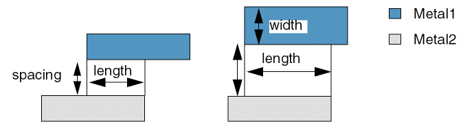

minClearance
Sets the minimum spacing, edge-to-edge, between shapes on two different layers. This constraint applies only to non-intersecting shapes on the two different layers and ensures that shapes on the two layers do not cross.
This constraint is symmetric, implying that the minimum clearance between layer1 and layer2 is the same as the minimum clearance between layer2 and layer1.
minClearance Quick Reference
Value Types
Optional Parameters
|
Specifies the table type when
Type:

|
|
|
Specifies the spacing measurement method as Euclidean (0, default) or Manhattan (1).
Type: For information on this parameter, see Euclidean and Manhattan Spacing Constraints. |
|
|
When set
Type: |
|
|
When set to
Type: |
|
|
Specifies the different-net clearance between objects on a cut layer and objects on a routing layer. This parameter can only be used with
Type: |
|
|
Specifies the measurement direction.
Type: |
|
Examples
Example 1: minClearance Fixed Value
Sets the minimum clearance between shapes on Metal1 and shapes on Metal2 to 1.5.
set_layerpair_constraint -constraint minClearance \
-layer1 Metal1 -layer2 Metal2 -Value 1.5
Example 2: minClearance 2D Table: Indices width/length
In the following example, the minimum clearance is dependent on the parallel run length between a Metal1 shape and a Metal2 shape. To prevent crosstalk, more spacing is required for longer parallel run lengths. With the row width set to 0, the widths of the shapes are not considered.
- If the parallel run length is greater than or equal to 0.3 μm, then the minimum clearance is 0.2 μm.
-
If the parallel run length is greater than or equal to
0.6μm, then the minimum clearance is0.4μm. -
If the parallel length is greater than or equal to 1.0 μm, then the minimum clearance is
0.8μm.
set_layerpair_constraint -constraint minClearance \
-layer1 Metal1 -layer2 Metal2 \
-hardness hard -row_name width -col_name length \
-TblCols { 0.3 0.6 1.0 } \
-TwoDTblValue { 0 0.2 0.4 0.8 } \
-row_interpolation snap_down \
-row_extrapolation {snap_up snap_down} \
-col_interpolation snap_down \
-col_extrapolation {snap_up snap_down}
Example 3: minClearance with orthogonalSpacing
In the following example, the different-net spacing between objects on a cut layer and objects on a routing layer. The rule does not apply to same-net objects. The spacing check is done by using the following method:
The difference between minClearance and orthogonalSpacing is calculated, and half of that difference is shrunk on two sides of the cut and grown on the other two sides. Then, a Euclidean spacing of the average of minClearance and orthogonalSpacing is applied to the newly formed rectangle geometry. The shrink and grow operations are done on the alternated sides to form another checking region. A violation occurs only when shapes on the routing layer are found in the gray regions of both check 1 and check 2.
set_constraint_parameter -name orthogonalSpacing -Value 0.2 set_layerpair_constraint -constraint minClearance \
-layer1 "V1" -layer2 "Metal1" \
-hardness hard -Value 0.1
Related Topics
Return to top